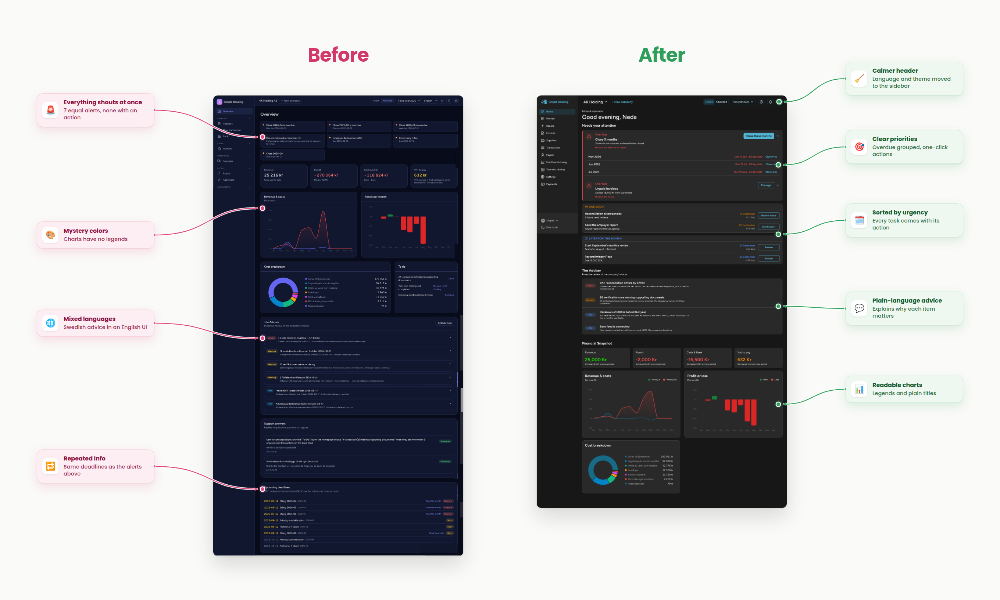
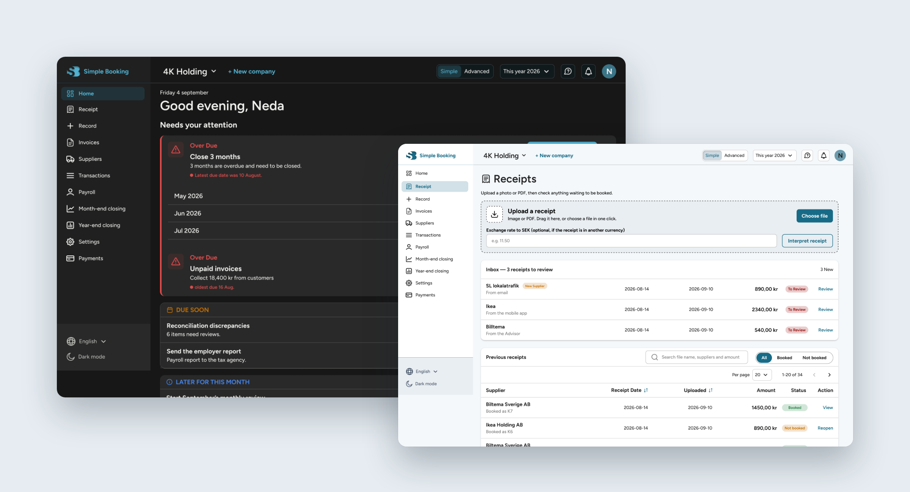
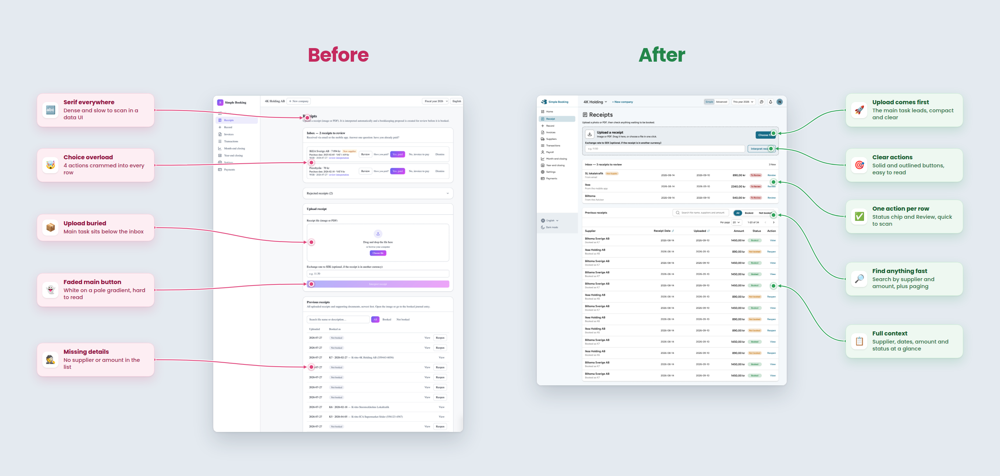
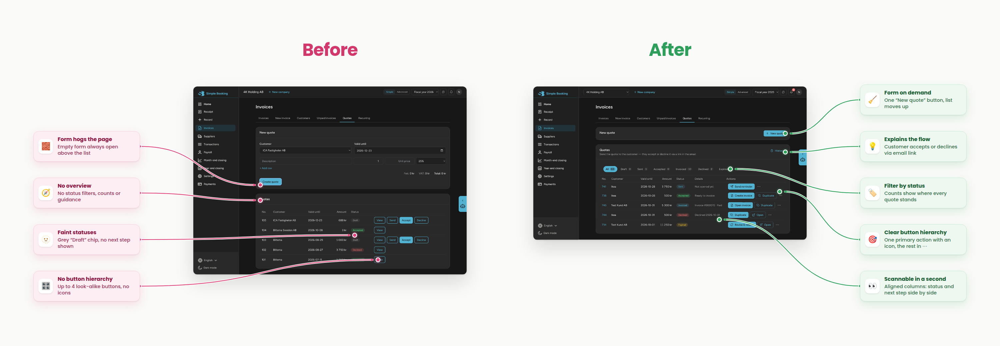
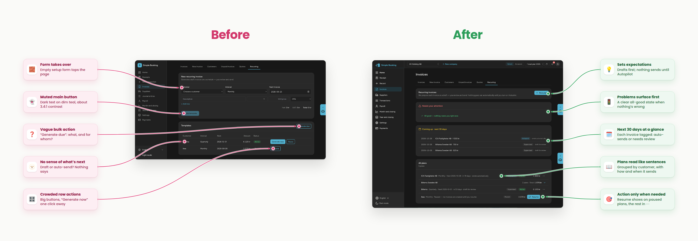
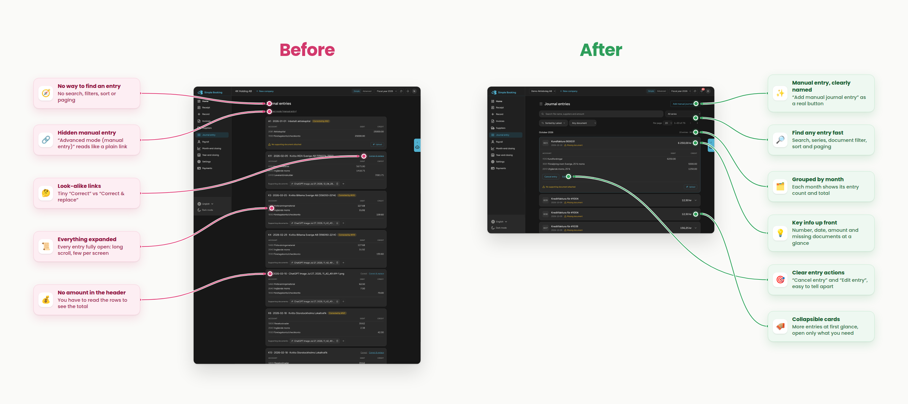
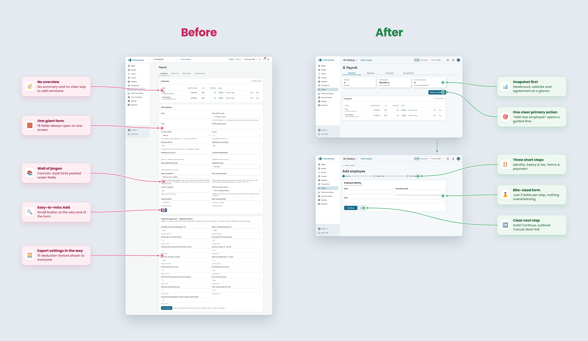

Home overview
From seven equal alerts and repeated deadlines to one “Needs your attention” list with days late, one-click actions and plain-language advice.

Case Study · SaaS · FinTech
Turning a developer-built accounting tool into a product anyone can use, with no accounting background required.
Redesign and implementation in progress
Accounting for everyone, not just accountants
Simple Booking is an accounting application for business owners. It connects banks, the Swedish Tax Agency (Skatteverket) and the company's books, so users can record, reconcile and file in one place. The goal is to make accounting simple and accessible to everyone, from small business owners to larger companies, without technical skills or prior accounting knowledge.
When I joined, the product had already been built by developers, without designers involved. It had never been usability tested, and its UX had not been validated with real users. The result worked, but it was organised around how the system stores data rather than how people think about their business.
My job is to transform the existing application into an intuitive, user-friendly product, and to take that work all the way from research to implemented interfaces.
Leading UX from research to implementation
Workshops, interviews and usability testing on the live product
Because the product already existed, I started by testing it as it was. I combined workshops with real users, one-to-one interviews and moderated usability tests on the existing application, so every design decision could be traced back to something users actually did or said.
Users opened the app and didn't know what to do first. Every alert, deadline and task looked equally important.
Usability testing · Overview pageLong forms and accounting terminology stopped people who don't have an accounting background.
Workshops · Payroll and invoicing flowsRows full of look-alike buttons made it hard to tell the main action from risky or rare ones.
Usability testing · Quotes and receipts“User is confused about why the To-Do list on the homepage shows 9 transactions missing supporting documents when they see more than 9 unprocessed transactions in the bank feed.”
— A real support ticket, shown on the original overview pageBuilt around the system, not the user
The original application had the right features, but they were arranged the way the database sees them. Three problems came up again and again.
Overdue tasks, deadlines and advice were spread across the page and repeated in several places, all with the same visual weight.
Setup forms were always open. Adding one employee meant facing 18 fields at once, followed by 15 expert deduction factors.
Main buttons used low-contrast gradients, actions had no icons or hierarchy, and Swedish and English text were mixed.
From research to working code, in short loops
Reviewed every page of the existing product and logged usability, consistency and accessibility issues.
Met real users to map their tasks, language and frustrations around everyday accounting.
Watched users complete core tasks in the live product to find where they got stuck.
Restructured each page around user tasks and built a consistent, accessible component system.
Built the redesigned screens myself, page by page, in dark and light mode.
Handed working screens to the back-end team and continued refining with user feedback.
Five principles behind every screen
Each page opens with what needs attention now, sorted by urgency, with the action right next to it.
Forms open on demand, long flows become short steps, and entries collapse until you need the detail.
Plain-language labels and advice that explains why something matters, in one language throughout.
A single solid button per context, with icons. Secondary and rare actions are outlined or moved into a menu.
Readable contrast, consistent spacing and typography, and full dark and light themes built from the same system.
Six pages, before and after
From seven equal alerts and repeated deadlines to one “Needs your attention” list with days late, one-click actions and plain-language advice.

Upload moves to the top, every inbox row has one clear action, and the list finally shows supplier, amount and status.

A clear button hierarchy with icons, status filters with counts, and a table you can scan in a second.

Users always know what happens next: what sends automatically, what waits for review, and what is coming up in the next 30 days.

Collapsible cards show more entries at first glance and keep detail one click away. Manual entry becomes a clearly named button.

One 18-field form becomes a guided three-step flow, starting from a payroll overview with a single clear action.

From Figma to working front-end with Claude Code
Instead of handing designs to a front-end developer and waiting for implementation, I build the redesigned interfaces myself with Claude Code. I describe the component, the layout and the behaviour, review what it generates against my Figma design, and refine until the screen matches the design and works in both dark and light mode.
When a page is done, I hand the working front-end to the back-end team for integration. Designs no longer get lost in translation, and I can fix details myself instead of filing them as tickets.
This has significantly accelerated implementation, reduced the need for manual front-end coding and helped the whole team move forward faster.
An ongoing project, shipped page by page
What I've learned so far
The biggest wins didn't come from new visuals. They came from deciding what to show first, what to hide, and what to split into steps.
Watching users struggle with the original version gave the team a shared, evidence-based reason for every change.
Implementing my own designs with Claude Code closed the gap between design and build, and let me own the details end to end.